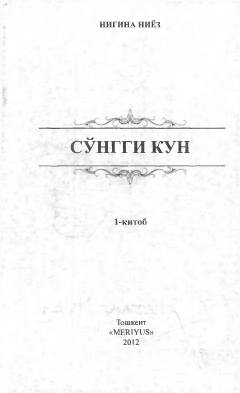

SKOʻlimdan keyingi hayot va ruhning abadiyligi haqidagi taʼsirli xayoliy qissa.
Ushbu asarda oʻlimdan keyingi hayot, ruhning abadiyligi va inson taqdiri falsafiy hamda hayotiy voqealar asosida hikoya qilinadi. Muallif turli ilmiy va diniy qarashlarni oʻrganib, hayot va oʻgʻri oʻlim haqidagi taassurotlarini badiiy talqin qilgan.